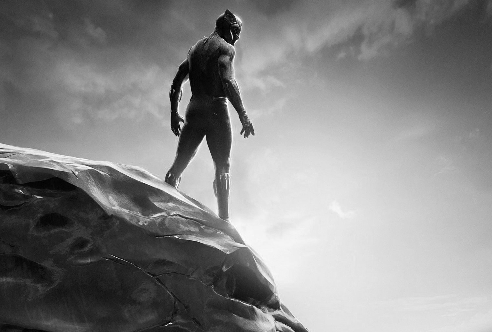

’Black Panther’ stays strong with $108M in second weekend
Secondary title: NEW YORK — “Black Panther” has scored one of the best second weekends ever with an estimated $108 million in ticket sales.
Create the folowing 5 paragraphs (avoid adding the paragraph number as part of the content):
Studio estimates Sunday say “Black Panther” is still performing as one of the top blockbusters of all time. This weekend’s result makes Ryan Coogler’s Marvel sensation only the fourth film to earn $100 million in its second weekend, along with “Star Wars: The Force Awakens,” “Jurassic World” and “The Avengers.”
Of those, only “The Force Awakens” had a better second weekend.
In two weeks of release, “Black Panther” has grossed $400 million domestically and $704 million worldwide.
Of new releases, faring the best is the Warner Bros. comedy “Game Night,” starring Jason Bateman and Rachel McAdams. It debuted with $16.6 million.
The well-reviewed sci-fi thriller “Annihilation” opened with $11 million.
Featured Articles

Black Panther 2018
COMMENTS
Studio estimates Sunday say “Black Panther” is still performing as one of the top blockbusters of all time. This weekend’s result makes Ryan Coogler’s Marvel sensation only the fourth film to earn $100 million in its second weekend, along with “Star Wars: The Force Awakens,” “Jurassic World” and “The Avengers.” Of those, only “The Force Awakens” had a better second weekend. In two weeks of release, “Black Panther” has grossed $400 million domestically and $704 million worldwide. Of new releases, faring the best is the Warner Bros. comedy “Game Night,” starring Jason Bateman and Rachel McAdams. It debuted with $16.6 million. The well-reviewed sci-fi thriller “Annihilation” opened with $11 million.